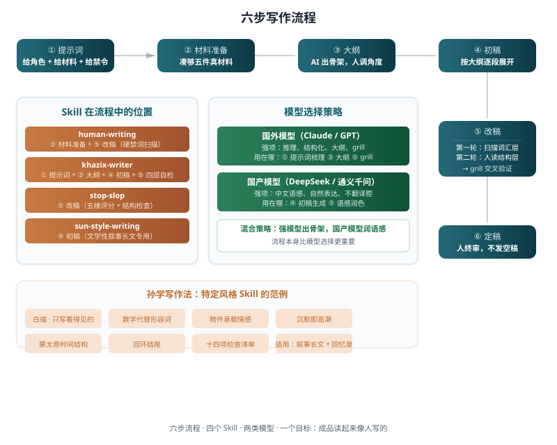

去 AI 味
模型、流程与技能矩阵
选对模型是加分项，选对流程是及格线。四个 skill 各司其职，六步走完，成品读起来像人写的。
模型是不是决定性因素
第一课讲了七种 AI 味的痕迹。你可能会问：换个模型能不能直接解决这些问题？
答案能解决一部分，但不能解决全部。
国产模型（DeepSeek、通义千问、文心一言、GLM）在中文语感上确实优于 Claude 和 GPT。它们生成的句子更自然，更少翻译腔，更少"在当今 AI 快速发展的时代"这种套话开头。如果你用 DeepSeek 生成一段中文，标点错误和模型腔词汇会比 Claude 少。
但国产模型有两个短板。第一，推理和结构化能力不如 Claude 和 GPT。你让它分析一篇文章的论证结构、设计一个复杂的大纲、或者做 grill 交叉验证，它容易漂。第二，国产模型同样会犯翻案腔、三件套排比、假动作这些结构层的问题。换模型能减少词汇层的 AI 味，但结构层的痕迹跟模型关系不大。它是训练数据和 RLHF 的产物，所有大模型都带着。
模型选择的核心问题是在哪一步用哪个。
混合策略：强模型出骨架，国产模型润语感
| 步骤 | 用什么模型 | 为什么 |
|---|---|---|
| 提示词梳理、材料分析 | Claude / GPT | 需要强推理来理解素材、提取关键信息 |
| 大纲设计 | Claude / GPT | 需要结构化能力来搭骨架 |
| 初稿生成 | 国产模型 | 需要中文语感，避免翻译腔 |
| grill 交叉验证 | Claude / GPT | 需要强推理来追问逻辑漏洞 |
| 改稿润色 | 国产模型 | 需要中文语感做最后的语感调整 |
如果你只用一种模型，优先选国产模型。中文语感好是底线。结构层的问题可以靠人改，但每句话都带着翻译腔，改起来工作量太大了。
如果你只用 DeepSeek 一个模型走完全程，流程本身比模型更重要。好的流程能弥补单个模型在推理上的短板。材料准备、大纲、grill 这三个环节，把推理负担分散到了流程里。
六步流程

第一步：提示词
提示词决定了 AI 从什么位置开始写。给 AI 的提示词应该包含三样东西。
角色。告诉 AI 它是谁。"你是一个写中文专栏的作者，面向 AI 行业的从业者"。不要写"你是一个写作助手"这种空话。
材料。把素材直接丢进去。新闻链接、PDF、语音转文字、散乱想法，全给。不要只给主题让 AI 自己编。khazix-writer 的第一步就是"先吃透素材"。
禁令。在提示词里直接列出禁用词和禁用句式。第一课的速查表里挑五条最关键的塞进去。比如"不要用'不是……而是……'、'说白了'、'意味着'、'本质上'。不要用破折号。不要用提示性冒号。不要用三件套排比。"
禁令帮 AI 避开它自己被训练出来的坏习惯。
第二步：材料准备
human-writing 的核心规则是，非虚构长文动笔之前，先凑够五件真材料。一个事实、一个数据、一个场景、一段原话、一个对比，任选五种。
凑不够五件，就别写长稿。去查材料、去问人、或者缩短到 600 字以内。这条规则听起来苛刻，但它治的是 AI 味的根。AI 味就是"手里没东西，嘴上说不停"。
这一步不用 AI。人自己做。
第三步：大纲
把材料给 AI，让它出大纲。只出骨架，每段的主题句和关键论据，不展开。大纲阶段的核心动作是人调角度，问 AI 给的结构是不是你要的推进顺序，有没有漏掉你最想说的那个判断。
khazix-writer 里有一个 HKR 质检，H（Happy，有趣吗）、K（Knowledge，有信息量吗）、R（Resonance，能戳中情绪吗）。好选题至少占两项。大纲出来之后，用 HKR 过一遍每个板块，哪块只占一项甚至一项都不占，就调整或砍掉。
这一步用强推理模型（Claude / GPT）。
第四步：初稿
按大纲逐段展开。每段给 AI 明确的指令，这一段要讲什么、用什么材料、不要用什么句式。
这一步用国产模型。中文语感好，生成的初稿更接近最终成品。如果文章需要特定的文学风格，比如孙学写作法的白描、短句、物件承载情感，在这一步把对应的 skill 指令给 AI。
初稿写完之后，人做二次改写。加入自己的声音、打破节奏、补充只有你知道的细节。khazix-writer 的协作流程里明确写了这一步。AI 提供素材和启发，人负责第一手观察和核心创意角度。初稿是 AI 写的，但最终的声音必须是你自己的。
第五步：改稿
两轮改稿，对应第一课的两层扫描。
第一轮：词汇层扫描。全文搜索禁用标点和禁用词，逐一替换。human-writing 的 check_prose.py 可以自动化这一步。khazix-writer 的 L1 硬性规则检查也是干这个的。5 分钟搞定。
第二轮：结构层扫描。人读一遍全文，找翻案腔、套话开场、三件套排比、假动作、假细节。stop-slop 的五维评分（Directness / Rhythm / Trust / Authenticity / Density）可以作为改稿标准。低于 35/50 就再改一稿。
改稿中间可以插入一次 grill。把文章给 AI，让它追问每个观点的依据是什么、有没有假细节、有没有段落读完之后什么也没留下。grill 把问题逼出来，你自己判断要不要改。
第六步：定稿
人终审，检查四件事。
- 文章里的判断是你自己的判断吗？
- 细节是你的经历还是 AI 编的？
- 有没有段落读完之后什么也没留下？
- 读起来像一个具体的人在说话吗？
human-writing 的交稿规则是只交作品，不展示内部提纲和检查过程。定稿就是定稿，不需要附带"我是怎么写的"。
四个 Skill 各司其职
这门课引了四个 skill。它们各管一段，在流程中负责不同的环节。
| Skill | 负责步骤 | 核心价值 |
|---|---|---|
| human-writing | ② 材料准备 + ⑤ 改稿 | 材料驱动哲学（五件真材料）+ 硬禁词扫描 + 翻案腔禁令 |
| khazix-writer | ① 提示词 + ③ 大纲 + ④ 初稿 + ⑤ 改稿 | 完整写作流程 + 四层自检体系 + 五种文章原型 + 风格技法 |
| stop-slop | ⑤ 改稿 | 五维评分 + 假动作检测 + 节奏模式检查 |
| sun-style-writing | ④ 初稿（文学性叙事长文） | 白描、数字、物件、留白、蒙太奇，特定风格的全套技法 |
human-writing 偏防守，告诉你什么不能写。khazix-writer 偏进攻，告诉你完整的写作流程和风格技法，但它的风格是卡兹克的个人风格，技法需要适配你自己的声音。stop-slop 是评分工具，英文框架，但评分维度和结构检查可以迁移到中文。sun-style-writing 是特定风格的范例，展示了一套完整的从哲学到技法到检查清单的风格体系。
日常写作用 human-writing 的硬禁词、khazix-writer 的四层自检和 stop-slop 的评分框架，够用。需要特定风格时，再加对应的风格 skill。
孙学写作法：特定风格 Skill 长什么样
sun-style-writing 展示了一个特定风格 skill 的完整形态。它是一套从哲学到技法到检查清单的风格体系。
核心哲学是永远不要告诉读者该怎么感受。你只摆事实、给细节、留空白。情绪是读者自己生长出来的。
十项核心技法。
- 白描：只写看得见、摸得着、量得出的东西。不写心理活动，不写情绪形容词。
- 短句节奏：段落通常只有一句话。短-短-短-长的节奏，制造敲击感。
- 数字代替形容词：一个准确的数字比十个形容词更有杀伤力。"一百五十块"的羽绒服 vs "一亿五千万"的电影。
- 物件承载情感：找一个普通物件，让它在文中反复出现，每次意义不同。指甲锉、黑胶带、一支针。
- 沉默即高潮：最有分量的时刻，是一个人不说一句话。"我沉默了。"独占一段。
- 旁观者镜头：让一个不相干的人，清洁工、助理、路人，间接传递情感。
- 蒙太奇时间结构：非线性叙事，用年份、地点、物件作锚点。分隔符 `---` 只用在阶段转折，不超过 8 次。
- 场景深度：在一个场景里待够了再离开。三五百字不够，关键场景要沉到八百字。
- 虚空美学：空的酒店楼层、空的放映厅、空的跑道。奢华中的空，热闹退去后的空。
- 回环结尾：回到开头的意象，但意义已经不同。不总结、不升华、不"我终于明白了"。
这套写法不限于爱情故事。它的本质是一种叙事哲学，用物质世界的精确细节，传递精神世界的模糊情感。创业故事、亲情回忆、职场叙事、旅行见闻，都可以用。
sun-style-writing 的十四项检查清单值得单独拿出来看。它展示了一个好的风格 skill 应该具备的自我检查能力，不只是"写的时候注意"，它要求"写完逐项核查"。你做自己的风格 skill 时，也应该有一份这样的清单。
收尾：三件事记住就够了
AI 味有具体的痕迹，每种都能定位和修改。七种痕迹分两层，词汇层扫描，结构层人读。两轮过后，文章干净一大半。
模型选策略，不选阵营。强推理模型出骨架，国产模型润语感。只用一个模型的话，流程比模型更重要。
流程是底线，skill 是加速器。六步流程，从提示词到定稿。提示词给角色、材料和禁令，材料凑够五件，大纲人调角度，初稿人做二次改写，改稿两轮扫描加 grill，定稿人终审。四个 skill 各司其职，按需加载。
材料来源
- khazix-writer — 完整写作流程、四层自检、五种文章原型
- human-writing — 材料驱动写作、硬禁词、翻案腔禁令
- stop-slop（本地 skill）— 五维评分、假动作、节奏检查
- sun-style-writing — 孙学写作法，白描、数字、物件、留白、蒙太奇
- Dify Blog: Beyond Translation — 混合工作流实践